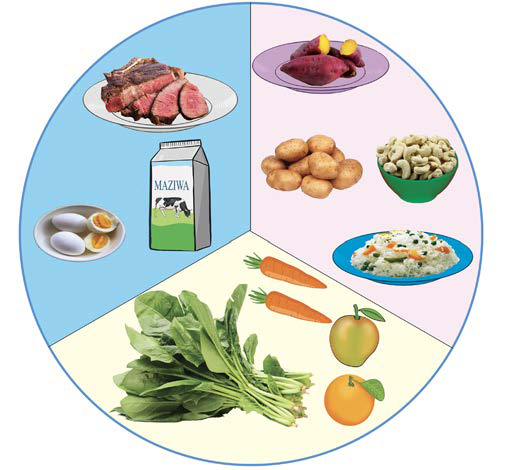

Vijanabalehe
Hili ni kundi lililopo katika kipindi cha balehe. Katika kipindi hiki mwili hupitia mabadiliko na kukua kwa haraka, hivyo kijana huhitaji mlo wenye vyakula vya kutosha vya kujenga, kulinda na kuupa mwili nguvu na joto. Katika umri huu, kijana hujishughulisha na shughuli mbalimbali kama vile michezo, kulima au kusoma kwa muda mrefu. Hivyo, ni muhimu mlo wa kijana uwe na kiwango kikubwa cha vyakula vya kuupa mwili nguvu. Hii ni kwa sababu mwili unahitaji nguvu za kutosha kuhimudu shughuli zake. Kielelezo namba 7 kinaonesha mlo kamili wa kijanabalehe.

Maelezo ya picha: Mlo kamili wa kijanabalehe wenye makundi matatu ya vyakula: vya kujenga mwili, vya kuupa mwili nguvu, na vya kulinda mwili. Kuna mayai, maziwa, nyama, viazi, wali, mboga za majani na matunda.Kielelezo namba 7: mlo kamili wa kijanabalehe.
Wazee
Kinga ya mwili hupungua katika kipindi cha uzee. Hivyo, wazee wanatakiwa kula vyakula vyenye vitamini ili kujikinga na magonjwa ya mara kwa mara. Pia, wanapaswa kula vyakula vyenye madini mbalimbali ili kuimarisha mifupa, na misuli ya mwili. Vilevile, wanatakiwa kula kiasi kidogo cha vyakula vya